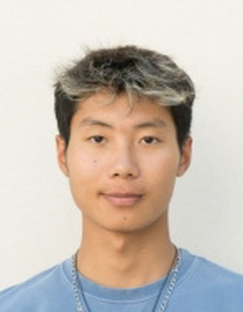

Hugo Bouchet
Élève ingénieur en électronique, énergie électrique et automatique, je m'intéresse aux systèmes embarqués et à l'automatisation, avec un attrait particulier pour l'aéronautique, le spatial et la défense.

Ce qui m'intéresse
Les domaines vers lesquels j'aimerais m'orienter au cours de ma formation.
Systèmes embarqués
Programmer des microcontrôleurs pour piloter du matériel en temps réel, une approche découverte lors de mon alternance à l'INPHYNI.
Automatisation industrielle
Concevoir des systèmes qui mesurent, commandent et automatisent des procédés, au cœur de ma formation en automatique à l'ENSEEIHT.
Aéronautique, spatial & défense
Des secteurs exigeants où l'électronique embarquée et l'automatique sont essentielles, et qui m'attirent particulièrement, notamment à Toulouse.
Explorer le portfolio
Formation & projets
Mon parcours académique, mes projets techniques et mes compétences.
Voir →Carrière
Stages, projet professionnel, role models, CV et pitch.
Voir →International
Langues et stage de recherche en Chine.
Voir →Engagement
Co-fondation du BDE et transition écologique.
Voir →Activités
Sport en club, passions et jobs étudiants.
Voir →Contact
Email, téléphone et LinkedIn.
Voir →Formation & projets
Mon parcours académique, les projets techniques que j'ai menés et les compétences que j'en retire.
Mes formations
Cliquez sur une formation pour en voir le détail.
Toulouse INP – ENSEEIHT · département 3EAen cours
Cycle ingénieur au département 3EA : Électronique, Énergie Électrique et Automatique.
Enseignements principaux
- Systèmes numériques et électronique
- Théorie des circuits
- Signal et commande (automatique)
- Systèmes électriques
- Programmation
Objectif
M'orienter vers les systèmes embarqués et l'automatisation, idéalement dans l'aéronautique, le spatial ou la défense.
Centrale Méditerranée · Bachelor
Bachelor d'ingénierie en trois ans, orienté ingénierie numérique, innovation et gestion de projet.
Contenu
- Socle pluridisciplinaire : mathématiques, physique, électronique, mécanique, informatique
- Projets industriels en équipe
- Immersion professionnelle chaque année
3e année en alternance
Rythme 2 semaines école / 2 semaines laboratoire à l'INPHYNI (CNRS), sur un prototype d'imagerie hyperspectrale.
Vie de l'école
Vice-président et co-fondateur du BDE du Bachelor (campus de Nice) ; élu étudiant transition écologique et développement durable.
CPGE PCSI, option PSI · Lycée Jean Perrin
Année de classe préparatoire scientifique.
Enseignements
- Mathématiques intensives
- Physique-chimie
- Sciences de l'ingénieur (option PSI)
Baccalauréat général · Lycée Rosa Parks
Lycée Rosa Parks, Neuville-sur-Saône.
Projets techniques
Prototype d'imagerie hyperspectrale active
Synchronisation temps réel d'un laser à 250 kHz, d'un miroir à 12,5 Hz et d'une caméra rapide à 12,5 kHz sans gigue, sur Teensy 4.1. Acquisition ADC à 250 kHz par DMA, puis traitement du signal pour mesurer l'épaisseur de films minces (films de savon). Redesign opto-mécanique du prototype et analyse de marché exploratoire.
Ce que j'ai pratiqué
Des outils et des notions abordés en formation et en stage, que je continue d'approfondir.
Programmation
Électronique & embarqué
Automatique & signal
Savoir-être
Carrière
Mes expériences professionnelles, mon projet professionnel et mes documents.
Stages
Cliquez sur un stage pour voir le détail.
Stagiaire de recherche · Beihang University
- Prise en main du logiciel de simulation FLUKA sous Linux
- Simulation d'un faisceau d'ions carbone et comparaison avec une étude de référence
- Stage mené en anglais, avec un encadrement à distance
Stagiaire ingénieur · INPHYNI (CNRS)
- Synchronisation temps réel sur Teensy 4.1 (C++) : laser 250 kHz, miroir, caméra rapide
- Acquisition ADC 250 kHz par DMA ; traitement du signal en Python (FFT, Hilbert)
- Redesign opto-mécanique d'un prototype d'imagerie hyperspectrale
- Rythme alterné : 2 semaines école / 2 semaines laboratoire
Assistant ingénieur OPC · Global SA
- Suivi et pilotage de chantier : organisation et respect des délais
- Élaboration et suivi du planning d'avancement
- Préparation et compte-rendu des réunions de coordination
Où je veux aller
Je souhaite m'orienter vers les systèmes embarqués et l'automatisation, de préférence dans l'aéronautique, le spatial ou la défense.
Pendant ma formation, je cherche à faire des stages dans ces domaines, en entreprise ou en laboratoire, pour confirmer cette orientation et découvrir concrètement les métiers qui s'y rattachent.
Des parcours qui m'inspirent
Trois profils d'ingénieurs, et la piste de mobilité internationale que chacun m'inspire.
Poste, entreprise
Parcours, compétences clés, ce que j'en retiens · piste de mobilité associée.
Poste, entreprise
Parcours, compétences clés, ce que j'en retiens · piste de mobilité associée.
Poste, entreprise
Parcours, compétences clés, ce que j'en retiens · piste de mobilité associée.
Elevator pitch
Présentation vidéo de 2 à 3 minutes, en anglais.
Lien de la vidéo à ajouter.
Un mois de recherche en Chine
Stage de recherche au BCC Lab · École Centrale de Pékin
Stage de recherche en simulation pour la physique médicale, au sein d'un laboratoire franco-chinois installé sur le campus international de Beihang à Hangzhou. Ma première expérience de vie et de travail à l'étranger.
Ce que j'ai découvert
- Une culture et un mode de vie très différents, au quotidien sur un campus situé en périphérie de Hangzhou.
- La ville de Hangzhou, et deux week-ends à Shanghai pour découvrir l'une des plus grandes métropoles du pays.
- Une intégration facilitée par mon colocataire, qui m'a beaucoup aidé à prendre mes repères.
Comment je me suis adapté
- Travail en anglais avec une encadrante chinoise, parfois à l'aide d'outils de traduction : j'ai appris à formuler mes questions le plus simplement et précisément possible.
- Encadrement à distance pendant l'été : j'ai dû avancer en autonomie, chercher seul dans la documentation et rendre compte régulièrement de mon travail.
Au-delà du sujet scientifique, ce stage m'a surtout appris à m'adapter à un environnement inconnu et à travailler de façon autonome au sein d'une équipe internationale. Il m'a aussi donné envie d'apprendre le chinois, que j'ai commencé à l'ENSEEIHT.
Langues parlées
Français
Langue maternelle
Anglais
Niveau B2 · TOEIC 810
Italien
Niveau scolaire
6 ans d'apprentissage, de la 5e à la terminaleChinois
Débutant
En cours d'apprentissage à l'ENSEEIHT depuis 2026Engagement
Vie associative, représentation des étudiants et transition écologique.
Création du BDE du Bachelor de Centrale Méditerranée
Vice-président et co-fondateur du BDE du Bachelor
Dès ma première année, j'ai aidé à créer le Bureau des élèves du Bachelor, qui n'existait pas encore sur le campus de Nice, avec deux camarades : le président (Mathis Michelis), la trésorière (Maëlle Sirvent) et moi en tant que vice-président.
De la création à la transmission
- 1re année : mise en place administrative de l'association, avec une équipe de trois personnes.
- 2e année : premières sorties et soirées organisées.
- 3e année : avec trois promotions réunies, un programme plus riche : soirées, événements et une journée au ski, jusqu'à une vingtaine de participants par événement.
- Passation à une nouvelle équipe, qui a repris le BDE.
Sur un campus d'une cinquantaine d'étudiants, le principal défi a été de mobiliser et de faire vivre l'association. Cette expérience m'a appris à mener un projet sur la durée, de sa création jusqu'à sa transmission, et à persévérer quand l'engagement autour de soi est limité.
Transition écologique
Élu étudiant transition écologique et développement durable
Représentant des étudiants aux réunions de l'école consacrées au développement durable, pour porter la voix des élèves sur ces sujets.
Activités
Ce qui m’anime au quotidien : le sport en club, mes passions et les jobs étudiants qui m’ont fait grandir.
Sport en compétition
Le sport collectif m'a appris l'esprit d'équipe, la régularité à l'entraînement et la capacité à m'adapter à un nouveau groupe.
Volley-ball
AS Toulouse INP
Championnat universitaire FFSU, après une blessure.
AS Monaco
Débuts en départemental, puis pré-national après quelques mois.
Football
FC Bords de Saône (FCBS)
U20.
CS Neuville (CSN)
U16 à U18 en Régional.
FC Rive Droite (FCRD)
Monts d'Or Azergues Foot (MDA)
Dessin
À compléter : ce que tu dessines (croquis, portraits, BD…), depuis quand, et une ou deux images.
Jeux
J'aime jouer aux jeux vidéo en ligne, notamment les jeux multijoueurs comme Valorant ou League of Legends, mais je suis également grand fan de jeux de société et de réflexion (énigmes, escape games…).
Photos et vidéos
Je commence à prendre des photos et des vidéos avec un drone.
Travailler en parallèle des études
Des emplois saisonniers et étudiants qui m'ont appris l'organisation, la rigueur et le contact client.
Carrefour
Employé commercial : mise en rayon, suivi des stocks, inventaire et réassort quotidien, relation client.
Les Planches
Serveur pendant 1,5 mois : service, manutention, organisation des soirées.
3R Façades
Ouvrier : travaux manuels, comptabilité, mise à jour du fichier clients sur Excel (coordonnées, rendez-vous).
Samada
Préparateur de commandes pendant 1 mois : gestion des commandes et des stocks en réserve.
Association Saint Augustin
Personnel de service : ménage, plonge, organisation des activités, encadrement d'enfants.
Contact
Une proposition de stage, un projet ou simplement une question ? N'hésitez pas à m'écrire.
Je recherche un stage en systèmes embarqués ou en automatisation
Discutons de votre projet, de votre entreprise ou de votre laboratoire.